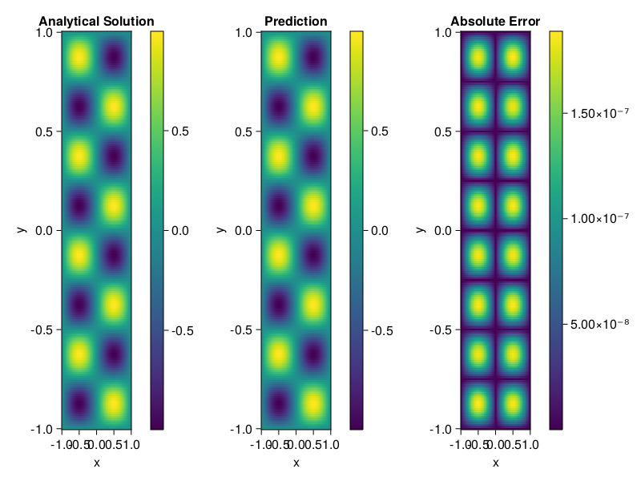

Helmholtz equation
Let us consider the Helmholtz equation in two space dimensions
\[\begin{aligned} &\Delta u(x, y)+k^{2} u(x, y)=q(x, y), \quad(x, y) \in \Omega:=(-1,1)^2 \\ &u(x, y)=0, \quad(x, y) \in \partial \Omega \end{aligned}\]
where
\[q(x, y)=-\left(a_{1} \pi\right)^{2} \sin \left(a_{1} \pi x\right) \sin \left(a_{2} \pi y\right)-\left(a_{2} \pi\right)^{2} \sin \left(a_{1} \pi x\right) \sin \left(a_{2} \pi y\right)+k^{2} \sin \left(a_{1} \pi x\right) \sin \left(a_{2} \pi y\right).\]
The excat solution is $u(x,y)=\sin{a_1\pi x}\sin{a_2\pi y}$. We chose $k=1, a_1 = 1$ and $a_2 = 4$.
using ModelingToolkit, IntervalSets, Sophon, Lux
using Optimization, OptimizationOptimJL
@parameters x,y
@variables u(..)
Dxx = Differential(x)^2
Dyy = Differential(y)^2
a1 = 1
a2 = 4
k = 1
q(x,y) = -(a1*π)^2 * sin(a1*π*x) * sin(a2*π*y) - (a2*π)^2 * sin(a1*π*x) * sin(a2*π*y) + k^2 * sin(a1*π*x) * sin(a2*π*y)
eq = Dxx(u(x,y)) + Dyy(u(x,y)) + k^2 * u(x,y) ~ q(x,y)
domains = [x ∈ Interval(-1,1), y ∈ Interval(-1,1)]
bcs = [u(-1,y) ~ 0, u(1,y) ~ 0, u(x, -1) ~ 0, u(x, 1) ~ 0]
@named helmholtz = PDESystem(eq, bcs, domains, [x,y], [u(x,y)])\[ \begin{align} \frac{\mathrm{d}^{2}}{\mathrm{d}x^{2}} u\left( x, y \right) + \frac{\mathrm{d}^{2}}{\mathrm{d}y^{2}} u\left( x, y \right) + u\left( x, y \right) =& - 166.7832748185191 \sin\left( 3.141592653589793 x \right) \sin\left( 12.566370614359172 y \right) \end{align} \]
Note that the boundary conditions are compatible with periocity, which allows us to apply BACON.
chain = BACON(2, 1, 5, 2; hidden_dims = 32, num_layers=5)
pinn = PINN(chain) # call `gpu` on it if you want to use gpu
sampler = QuasiRandomSampler(300, 100)
strategy = NonAdaptiveTraining()
prob = Sophon.discretize(helmholtz, pinn, sampler, strategy)
@time res = Optimization.solve(prob, BFGS(); maxiters=1000)u: ComponentVector{Float64}(filters = (filter_1 = (bias = [-0.5298635008846093; -0.12189415450005625; … ; -0.34383257529712596; -0.4220880029624921;;]), filter_2 = (bias = [0.9008629595811978; 0.622988504094706; … ; 0.06975350817790689; 0.7444246542973435;;]), filter_3 = (bias = [0.14250928395176976; 0.6383349210789573; … ; 0.4049769924666493; 0.7808823502461645;;]), filter_4 = (bias = [-0.7115602220062344; -0.4465981928497462; … ; 0.27347787869881757; 0.7713713659264968;;]), filter_5 = (bias = [-0.19072355123608054; -0.3779301864133528; … ; -0.4193807601638191; -0.5648884142097292;;])), linear_layers = (layer_1 = (weight = [-0.006293272512346415 0.046854546822192145 … -0.3634157490207713 -0.07437807534040036; -0.3916054846986025 0.38595534387037067 … -0.3783877085517521 -0.20550049982247112; … ; -0.15748243757698546 0.1426525431245006 … 0.36248579792389457 -0.36076101196178245; -0.08519731935071068 0.08664149748671506 … -0.12471060819447895 -0.3311547623394814], bias = [0.030677785047892352; 0.007478557176065654; … ; -0.02276934679848567; -0.009092222930236985;;]), layer_2 = (weight = [-0.2977436481720503 0.2467013482788291 … -0.12715303789587423 -0.2684658633379623; -0.30741059601739334 0.3752428059215983 … -0.13407922997915253 -0.2677001133711439; … ; 0.18897717322918126 0.08595910496683093 … -0.14882651908698655 -0.12583155502680557; -0.38962548203600994 -0.1395921159348285 … -0.1375848683503641 -0.5072406016407138], bias = [-0.024381564735977027; -0.007013924166100775; … ; 0.03818333600123837; -0.0029422155538766097;;]), layer_3 = (weight = [0.16523389653139714 -0.16921242557292643 … -0.08033799366798086 0.35221006474178973; 0.39533067022261364 -0.34179115106921903 … 0.28163996423888193 0.052269575484619406; … ; -0.3822974857272281 0.10824497640417421 … -0.306547916737514 0.08350551001586254; 0.19054297263727507 -0.2829541149329663 … 0.19942385823096062 -0.31507488477946155], bias = [0.003813426032346883; 0.002222154505467597; … ; 0.009883477508399536; -0.004173829170879111;;]), layer_4 = (weight = [0.3189795696896364 0.041581075248873646 … 0.29574845767466973 0.03730189850900326; -0.4203156031327785 -0.4006923937174871 … 0.07591043083383342 0.3032621791692653; … ; 0.41433534963463037 -0.3155967696334957 … 0.3969669038124916 0.32552008397033116; -0.09521407859913233 -0.014315795011490683 … -0.20198451730555952 0.055989027160224726], bias = [-0.004457703733638849; -0.0017040690132078878; … ; 0.0006726647265327798; 0.0007102734251287272;;])), output_layer = (weight = [-0.2613610676214251 -0.05512047262276308 … -0.1878786388109909 0.3567693044334243], bias = [-0.0321612387722412;;]))Let's plot the result.
phi = pinn.phi
xs, ys= [infimum(d.domain):0.01:supremum(d.domain) for d in domains]
u_analytic(x,y) = sinpi(a1*x)*sinpi(a2*y)
u_real = [u_analytic(x,y) for x in xs, y in ys]
phi_cpu = cpu(phi) # in case you are using GPU
ps_cpu = cpu(res.u)
u_pred = [sum(phi_cpu(([x,y]), ps_cpu)) for x in xs, y in ys]
using CairoMakie
axis = (xlabel="x", ylabel="y", title="Analytical Solution")
fig, ax1, hm1 = heatmap(xs, ys, u_real, axis=axis)
Colorbar(fig[:, end+1], hm1)
ax2, hm2= heatmap(fig[1, end+1], xs, ys, u_pred, axis= merge(axis, (;title = "Prediction")))
Colorbar(fig[:, end+1], hm2)
ax3, hm3 = heatmap(fig[1, end+1], xs, ys, abs.(u_pred-u_real), axis= merge(axis, (;title = "Absolute Error")))
Colorbar(fig[:, end+1], hm3)
fig